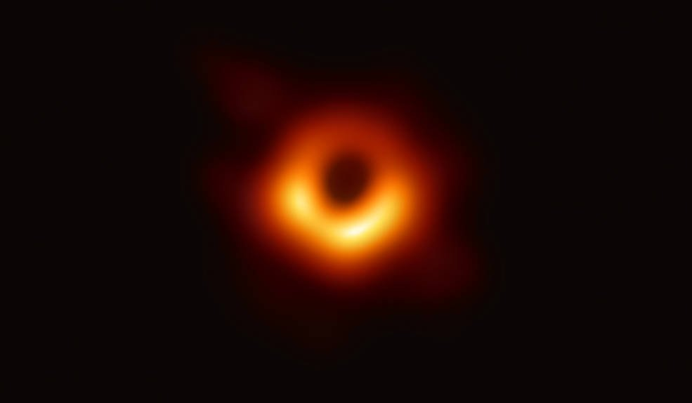

‘The Oldest Science’:
Often referred to as the oldest science, the study of astronomy has captivated minds throughout history. Archaeological evidence shows that ancient communities like the Egyptians, Babylonians and Maya all had forms of astronomy, aiding in timekeeping and navigation as well as underpinning many of their religious beliefs.

Astronomical ceiling of the tomb of Senenmut depicting a constellation diagram with discs divided into 24 sections, suggesting a 24-hour time period.
The Modern Day:
The vast mysterious nature of the universe captures the interest of the general public in the modern day too. That wonder however, leaves astronomy and cosmology vulnerable to misleading or exaggerated headlines.
Websites and videos will commonly abuse a highly speculative hypothesis and present it as an established fact with headlines that evoke an awe-inspiring narrative such as black holes being a portal to another universe. The average reader may be convinced of the existence of cosmic gateways when such claims actually stem from theoretical models that are mathematically interesting but lack observational proof.
Blackholes:
Blackholes are particularly susceptible to pseudoscience that appeals to the mystery of what they are and how they function.
Examples of misinformation
Explore common misleading claims and sensational headlines surrounding black holes and cosmology.
Learn moreConsequences of misinformation
Discover how pseudoscience and exaggerated reporting can influence public opinion and policy.
Learn moreBusting Myths!
Separating scientific fact from speculation and clarifying what physics actually tells us.
Learn moreConclusion
A summary of the key takeaways and final reflections on black hole pseudoscience.
Learn moreExample 1 – ‘Blackholes are a Portal to Another Dimension’ ▼
This article, published by Popular Mechanics, makes the claim, ‘Blackholes could be back doors to other universes’. It discusses the ideas of theoretical physicist Nikodem Popławski, that blackholes may not end in a singularity but instead form a wormhole.
The theory is based off a concept called torsion. However, the article asserts that, ‘cosmological torsion is not something that science has proven.’ This is supported by observation with the study [1], which found no evidence for torsion through cosmological observation.
The article fails to adequately explore the issues with Popławski’s theory, despite the fact that torsion-based extensions lie outside the accepted model of the Universe and are unsupported through empiricism. The use of exotic terminology such as “wormholes” and “alternate universes” appeals through impressive-sounding language rather than grounded scientific consensus.
Example 2 – ‘Time stops inside a blackhole’ ▼
This website makes the assertion that ‘we must say that time stops inside of each black hole’, a claim that misinterprets Einstein’s theory of general relativity [2].
The author states that, inside a blackhole exists an infinite gravitational field and so, ‘no further change can take place, and no physical process can go on that would give meaning to time. Thus, the theory simply asserts that time stops.’
While correct in saying the infinitely large gravitational field inside a blackhole can have a strange impact on time, relativity tells us that time would not stop from all reference frames. Time dilation depends on the observer’s frame of reference — an external observer sees extreme slowing near the event horizon, but locally, time continues normally for an infalling observer.
Example 3 – ‘Blackholes do not exist’ ▼
The article frames speculative ideas about reconciling quantum theory with general relativity as definitive proof that black holes cannot form, despite strong observational evidence for black holes.
This includes gravitational waves detected from black hole mergers, as well as direct imaging of event horizons. The broader scientific consensus overwhelmingly supports the existence of black holes based on extensive empirical data.

Real-World Consequences:
The best example of misinformation surrounding blackholes is the common misconception that the CERN Large Hadron Collider could create microscopic blackholes.
The large Hadron Collider is a particle accelerator built by the European Organisation for Nuclear Research. It accelerates particles like protons to near light speed at which point they collide in order to find the fundamental part that make them up.
Concerns grew so large that a nuclear safety officer, Walter Wagner along with reporter, Luis Sancho sued CERN over worries that smashing particles together at such high speeds could generate mini blackholes which could effectively destroy the Earth.
CERN maintained that Einstein's theory of relativity predicted that such phenomena being produced by the LHC were impossible. What’s more, the theory of Hawking radiation [4] dictates that the smaller a blackhole is, the faster it decays. Therefore, even if there were to be blackholes produced in the LHC, they would not exist for long enough to actually cause damage.
Due to such resounding scientific reassurance, the case was thrown out in 2010, two years after the suit was filed. Despite this, much damage had been done, with the suit and some others like it swaying public opinion against nuclear testing. The LHC is however still fully operational.
Busting the Myths – What does science really say?
In light of these theatrical interpretations, the next section aims to clarify what science can definitively say about blackholes, including what they are, how they function and whether the claims made in the websites shown have any merit.
2D Spacetime Warp
This interactive simulation visualises spacetime curvature caused by a massive object. The grid represents the fabric of spacetime, and the central depression illustrates how mass warps that fabric. Objects moving across the grid follow curved paths not because a force is pulling them in the traditional sense, but because spacetime itself is curved.
References
Liu, T., Li, X., Xu, T., Biesiada, M., & Wang, J. (2025). Torsion cosmology in the light of DESI, supernovae and CMB observational constraints. The European Physical Journal C, 85, Article 1351. https://doi.org/10.1140/epjc/s10052-025-15090-0
Einstein, A. (1916). Relativity: The Special and General Theory (R. W. Lawson, Trans.). Available at https://www.marxists.org/reference/archive/einstein/works/1910s/relative/relativity.pdf (Accessed February 23, 2026).
Abbott, B. P., Abbott, R., Abbott, T. D., Abernathy, M. R., Acernese, F., Ackley, K., … & the LIGO Scientific Collaboration and Virgo Collaboration. (2016). Observation of Gravitational Waves from a Binary Black Hole Merger. Physical Review Letters, 116(6), 061102. https://doi.org/10.1103/PhysRevLett.116.061102
Websites Reviewed
Wells, S. (2024, October 18). Black holes could be back doors to other universes, scientist claims. PopularMechanics.com. Retrieved February 23, 2026, from https://www.popularmechanics.com/space/a62650520/black-holes-could-be-back-doors-to-other-universes/
Smolin, L. (n.d.). The Mystery of Time. Retrieved February 23, 2026, from https://sites.google.com/view/ceointellect/themysteryoftime
Benios, T. (2014, September 24). Researcher shows that black holes do not exist. Phys.org. Retrieved February 23, 2026, from https://phys.org/news/2014-09-black-holes.html
Conclusions
In short, the malice of the stories shown often lies in their framing, presenting far-fetched ideas which may be permissible given current theoretical understanding, but conveniently failing to address countless other less-inspiring possibilities for the sake of viewer engagement.
In doing so, media can subtly reshape the public’s understanding of science. The universe is astonishing in its own right but when wonder takes precedence over truth, it can blur the line between scientific study and science fiction.
As such, this section aimed to separate the facts from the pseudoscience trying to drown them out. We hope the information, simulation and video were of use to you as we busted those myths!
Definitions
- Black Hole
- A region of space where gravity is so strong that nothing, not even light, can escape.
- Collapse
- The process by which a massive star contracts under its own gravity, often forming a neutron star or black hole.
- Type Ia Supernova
- An exploding white dwarf in a binary system that reaches a critical mass, producing a standardizable light output used to measure cosmic distances.
- CMB (Cosmic Microwave Background)
- The faint, uniform radiation left over from the early universe, about 380,000 years after the Big Bang.
- Event Horizon
- The boundary around a black hole beyond which nothing can escape to the outside universe.
- Schwarzschild Radius
- The radius of a sphere such that, if all the mass of an object were compressed within it, the escape velocity would equal the speed of light.
- Singularity
- A point at the centre of a black hole where density becomes infinite and classical physics breaks down.
- Wormhole
- A hypothetical tunnel connecting two distant regions of spacetime.
- Einstein–Rosen Bridge
- The original theoretical model of a wormhole predicted by Einstein and Rosen, connecting two black holes or regions of spacetime.
- Space-time Curvature
- The bending of spacetime caused by mass and energy, which we perceive as gravity.
- Torsion
- A property of spacetime in certain extensions of general relativity where, in addition to curvature, spacetime can “twist.” In black hole physics, torsion could modify the structure of the singularity or influence the behaviour of matter at extremely high densities.
- Information Paradox
- The puzzle of whether information falling into a black hole is lost forever, potentially conflicting with quantum mechanics.
- Time Dilation
- The slowing of time experienced by an object moving fast relative to an observer or in a strong gravitational field.
- Lorentz Factor
- A factor γ = 1 / √(1 − v²/c²) that describes how time, length, and relativistic mass change for an object moving at velocity v relative to an observer.
- LIGO
- Laser Interferometer Gravitational-Wave Observatory. A US-based physics project designed to detect gravitational waves from space.